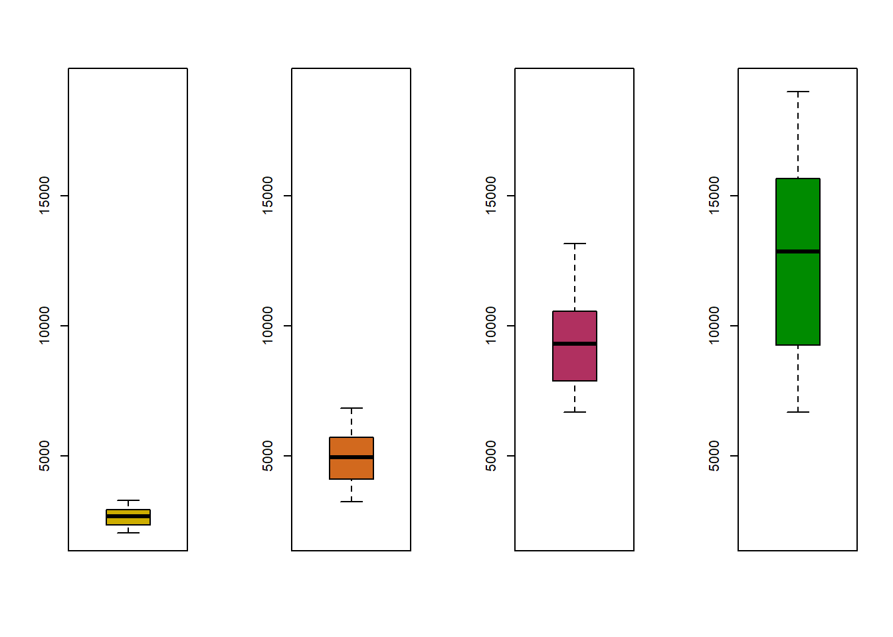
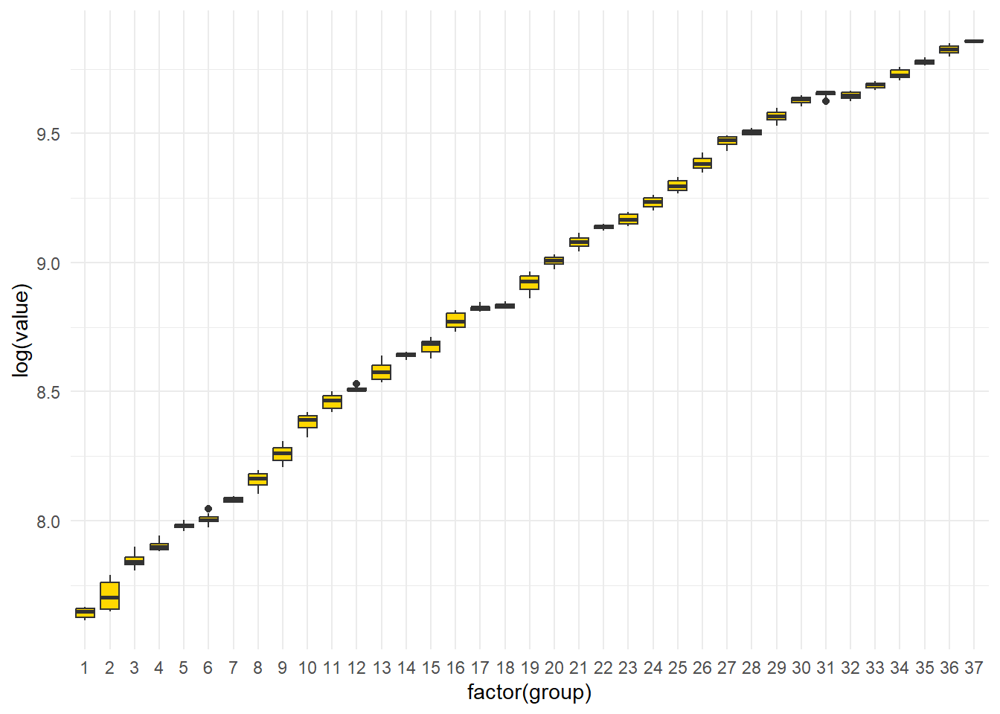

AIRBCN <- ts(read_table("AirBCN.dat")[,1]/1000, start=1990, freq=12)
Atur <- ts(read_table("Atur.dat")[,1]/1000, start=1996, freq=12)
EURDOL <- ts(read_table("eurodol.dat"), start=1995, freq=12)
GDPUSA <- ts(read_table("GDPUSA.dat"), start=1947, freq=4)
GDPUSAvar <- ts(read_table("gdpusavar.dat"), start=1990, freq=4)PS1: Stationary Transformations
Transformation into Stationary Time Series
Introduction
In this practice, we will apply exploratory analysis of time series to determine the transformations needed to make the transformed series stationary. Each group of students must follow the practice script below, performing the necessary calculations and generating the required graphs in the R environment. It is recommended to compile the obtained results and answer the questions in a document containing your solution, created, for example, using RMarkdown or Microsoft Word.
Questionnaire
In this questionnaire, we will analyze a set of time series, which can be found in the series repository on the course page in ATENEA:
GDPUSA: The data is available on the official website BEA and corresponds to the Gross Domestic Product (GDP) of the United States. These are quarterly data representing the chained volume in billions of dollars (2009), seasonally adjusted, from Q1/1947 until Q4/2019
GDPUSAvar: The data is available at BEA and corresponds to the percentage variation from the previous period of the GDP of the United States, based on chained prices. The series is seasonally adjusted, from Q1/1990 until Q4/2019
EURODOL: The data has been extracted from the website of the Spanish National Institute of Statistics INE, under Economy/Foreign Trade/Exchange Rates/Main Results. It corresponds to the monthly average exchange rate of the Euro (ECU before 1999) against the Dollar. The source of information is the Bank of Spain, through the Monthly Statistical Bulletin of INE, from 1/1995 until 12/2019. (Updated: BdE).
ATUR: The data comes from the website of the Spanish Ministry of Employment and Social Security, under Statistics / Labor Market / Registered Labor Movements / Main Series. It corresponds to the number of individuals registered as unemployed at INEM offices, from 1/1996 until 12/2019. MITES
AIRBCN: The data originates from the website of the Spanish Ministry of Public Works, under Statistical Information / Online Bulletin / Civil Aviation / 4.2 Traffic by Airports: Barcelona. It corresponds to the number of monthly international flight passengers at El Prat (BCN), from 1/1990 until 12/2019. MITMA
For each time series, the goal is to study the transformations required to achieve stationarity.
Q1: Data
Load the file containing each time series. Define the read data as an object of type ts (time series), specifying the origin and frequency of the series.
Q2: Graphs
Generate a graphical representation of the time series. Describe the most relevant visual characteristics observed.
AIRBCN
# useful functions for ts objects:
# 1. time(AIRBCN)
# 2. as.Date
# 3. as.numeric
# AIRBCN
AIRBCN_df <- tibble(
date = as.Date(time(AIRBCN)),
value = as.numeric(AIRBCN))
ggplot(AIRBCN_df, aes(x=date, y=value)) +
geom_line() +
labs(title= "AIRBCN",
x = "Date",
y = "Number of Passengers, 1000s") +
theme_minimal() +
theme(plot.title = element_text(hjust=0.5))
We observe what seems like a linear, perhaps quadratic trend in the data over time. We also immediately notice non-constant volatility, as the spread of the series increases as the level increases. There also seems to be a clear seasonal component, with the same intra-year spikes and dips repeating each year.
ATUR
# ATUR
ATUR_df <- tibble(
date = as.Date(time(Atur)),
value = as.numeric(Atur))
ggplot(ATUR_df, aes(x=date, y=value)) +
geom_line() +
labs(title= "ATUR",
x = "Date",
y = "# of Unemployed Individuals") +
theme_minimal() +
theme(plot.title = element_text(hjust=0.5))
There appears to be different piece wise trends across the data: a negative linear slope until 2000, then constant until ~2007, after which there seems to be a quadratic trend, first increasing until ~2012, after which it begins to fall. There does not appear to be much obvious non-constant volatility across different levels from the graph alone; however, there are obvious signs of seasonality present from first glances.
GDPUSA
# GDPUSA
GDPUSA_df <- tibble(
date = as.Date(time(GDPUSA)),
value = as.numeric(GDPUSA))
ggplot(GDPUSA_df, aes(x=date, y=value)) +
geom_line() +
labs(title= "GDPUSA",
x = "Date",
y = "USA GDP, $Millions") +
theme_minimal() +
theme(plot.title = element_text(hjust=0.5))
We see from the GDPUSA graph a linear trend with very little volatility, which seems to remain constant as we increase our level. There does not appear to be any seasonality, which makes sense as this variable is seasonally-adjusted.
GDPUSAvar
# GPDUSAVAR
GDPUSAvar_df <- tibble(
date = as.Date(time(GDPUSAvar)),
value = as.numeric(GDPUSAvar))
ggplot(GDPUSAvar_df, aes(x=date, y=value)) +
geom_line() +
labs(title= "GDPUSAVAR",
x = "Date",
y = "GDP % variation from the previous period") +
theme_minimal() +
theme(plot.title = element_text(hjust=0.5))
GDPUSAvar chart seems to have lots of volatility and is hard to tell whether it is constant or not across different levels. It seems to follow a constant trend. This variable, similar to GDPUSA, is seasonally adjusted so there does not appear any cycles in our data.
EURDOL
# EURDOL
EURDOL_df <- tibble(
date = as.Date(time(EURDOL)),
value = as.numeric(EURDOL))
ggplot(EURDOL_df, aes(x=date, y=value)) +
geom_line() +
labs(title= "EURDOL",
x = "Date",
y = "Avg EXR of EUR against USD") +
theme_minimal() +
theme(plot.title = element_text(hjust=0.5))
There appears to be different piecewise trends across the data: a negative linear slope until around 2000, then an upward trend until 2008, and finally a decreasing trend after 2008. There does appear to exist some non-constant volatility, since at higher levels we see larger fluctuations in the volatility of the exchange rate, likely resulting from instability surrounding a global currency. It remains difficult to see if there exists any seasonality within this chart alone.
Q3: Variance
Analyze whether the variance of the series is constant. Plot the mean-variance relationship and create boxplots for different periods. For quarterly series, group data every two years to ensure at least eight observations per period. If logarithmic transformation is applied, save the transformed series in an object with the prefix ln.
AIRBCN
# Plot mean-var
# AIRBCN_df %>%
# mutate(group = ntile(value, n=12)) %>% # break up into 12 colns and get mean/var of each yr
# group_split(group)
# Grouped DF
AIRBCN_grouped <- AIRBCN_df %>%
mutate(group = year(date)) %>%
group_by(group)
# Mean-Var by group DF
AIRBCN_mean_var <- AIRBCN_grouped %>%
summarize(
mean = mean(value),
var = var(value))
# Mean-Var Plot
p1 <- ggplot(AIRBCN_mean_var, aes(x=mean, y=var)) +
geom_line() +
theme_minimal()
# Boxplot: Value across grouped periods
p2 <- ggplot(AIRBCN_grouped, aes(x=factor(group), y=value)) +
geom_boxplot(fill = "cyan") +
theme_minimal() +
scale_x_discrete(labels = function(x) gsub("^..", "'", x))
p1+p2
# Can also use the following function:
#boxplot(AIRBCN ~ floor(time(AIRBCN)))Variance seems to be non-constant across levels for this dataset. Thus, we apply a log transformation to control for this.
# log-transform our data
ln.AIRBCN <- AIRBCN_df %>%
mutate(value = log(value))
# sanity check
ln.AIRBCN %>%
mutate(group = year(date)) %>%
group_by(group) %>%
ggplot(., aes(x=factor(group), y=value)) +
geom_boxplot(fill="skyblue") +
theme_minimal() +
labs(y= "log(value)") +
scale_x_discrete(labels = function(x) gsub("^..", "'", x))
After applying the log transformation, the variance becomes much more constant across different levels, so we can move onto checking for seasonality.
ATUR
# Plot mean-var
# Grouped DF
ATUR_grouped <- ATUR_df %>%
mutate(group = year(date)) %>%
group_by(group)
# Mean-Var by group DF
ATUR_mean_var <- ATUR_grouped %>%
summarize(
mean = mean(value),
var = var(value))
# Mean-Var Plot
p1 <- ggplot(ATUR_mean_var, aes(x=mean, y=var)) +
geom_line() +
theme_minimal()
# Boxplot: Value across grouped periods
p2 <- ggplot(ATUR_grouped, aes(x=factor(group), y=value)) +
geom_boxplot(fill="lightgreen") +
theme_minimal() +
scale_x_discrete(labels = function(x) gsub("^..", "'", x))
p1+p2
Does not appear to be non-constant volatility across different levels here. Only notice one period (2008) with an abnormally large variance, but seems to be the exception rather than a pattern. We can apply a log transformation to see if there would be any effect on the graph, but I suspect there to be little change.
# apply ln transformation
ggplot(ATUR_grouped, aes(x=factor(group), y=log(value))) +
geom_boxplot(fill = "salmon") +
theme_minimal() +
scale_x_discrete(labels = function(x) gsub("^..", "'", x))
As we suspected, the log transformation produces very little change, confirming that the variance in ATUR is already approximately constant across levels. We choose not to transform this variable.
GDPUSA
# Plot mean-var
# Grouped DF: Each group is 8qtr (2yr)
GDPUSA_grouped <- GDPUSA_df %>%
mutate(group = ceiling((year(date) - 1946) / 2)) %>%
group_by(group)
# Mean-Var by group DF
GDPUSA_mean_var <- GDPUSA_grouped %>%
summarize(
mean = mean(value),
var = var(value))
# Mean-Var Plot
p1 <- ggplot(GDPUSA_mean_var, aes(x=mean, y=var)) +
geom_line() +
theme_minimal()
# Boxplot: Value across grouped periods
p2 <- ggplot(GDPUSA_grouped, aes(x=factor(group), y=value)) +
geom_boxplot(fill="gold") +
theme_minimal()
p1 + p2
Although not immediately obvious by the histogram plot, we can see from the mean-var plot that as the mean level rises, our variance seems to increase as well; thus, the volatility is non-constant and needs to be dealt with.
w1 <- window(GDPUSA, start = 1947, end = 1960)
w2 <- window(GDPUSA, start = 1960, end = 1980)
w3 <- window(GDPUSA, start = 1980, end = 2000)
w4 <- window(GDPUSA, start = 1980, end = 2019)
par(mfrow = c(1, 4))
boxplot(w1, ylim = c(min(GDPUSA), max(GDPUSA)),
col = "gold3")
boxplot(w2, ylim = c(min(GDPUSA), max(GDPUSA)),
col = "chocolate")
boxplot(w3, ylim = c(min(GDPUSA), max(GDPUSA)),
col = "maroon")
boxplot(w4, ylim = c(min(GDPUSA), max(GDPUSA)),
col = "green4")
Grouping the data into four sub-periods makes the relationship clearer: variance visibly expands as the level of GDP rises, consistent with the upward-sloping mean-variance plot. Thus, we apply a log transformation.
# Store log transformation as an object
ln.GDPUSA <- log(GDPUSA)
# Resulting plot
ggplot(GDPUSA_grouped, aes(x=factor(group), y=log(value))) +
geom_boxplot(fill="gold") +
theme_minimal()
GDPUSAvar
# Plot mean-var
# Grouped DF: Each group is 8qtr (2yr)
GDPUSAvar_grouped <- GDPUSAvar_df %>%
mutate(group = ceiling((year(date) - 1989) / 2)) %>%
group_by(group)
# Mean-Var by group DF
GDPUSAvar_mean_var <- GDPUSAvar_grouped %>%
summarize(
mean = mean(value),
var = var(value))
# Mean-Var Plot
p1 <- ggplot(GDPUSAvar_mean_var, aes(x=mean, y=var)) +
geom_line() +
theme_minimal()
# Boxplot: Value across grouped periods
p2 <- ggplot(GDPUSAvar_grouped, aes(x=factor(group), y=value)) +
geom_boxplot(fill="turquoise") +
theme_minimal()
p1+p2
There is no strong evidence suggesting that there is non-constant volatility in this dataset; thus, we move onto checking for seasonality.
EURDOL
# Plot mean-var
# Grouped DF: each group is 12 months (1yr)
EURDOL_grouped <- EURDOL_df %>%
mutate(group = year(date)) %>%
group_by(group)
# Mean-Var by group DF
EURDOL_mean_var <- EURDOL_grouped %>%
summarize(
mean = mean(value),
var = var(value))
# Mean-Var Plot
p1 <- ggplot(EURDOL_mean_var, aes(x=mean, y=var)) +
geom_line() +
theme_minimal()
# Boxplot: Value across grouped periods
p2 <- ggplot(EURDOL_grouped, aes(x=factor(group), y=value)) +
geom_boxplot(fill="violet") +
theme_minimal() +
scale_x_discrete(labels = function(x) gsub("^..", "'", x))
p1 + p2
Variance seems to remain at a constant level except for at the highest level. Thus, we do not apply any transformations and move onto checking for seasonality.
Q4: Seasonality
Examine the presence of seasonal patterns. In addition to the time series plot, use the monthplot command and the autocorrelation function acf for the original series. For series exhibiting seasonality, perform seasonal differencing with an appropriate order (e.g., s=4 or s=12), and save the transformed series with the prefix d4 or d12.
AIRBCN
# to use monthplot, we should directly use a ts object:
monthplot(log(AIRBCN),
ylab = "log(value)",
main = "Seasonal Subseries Plot")
We notice that there seems to exist an obvious seasonality pattern; every year from January to December there are less travels to begin the year, but as the year continues we see more and more travels, coinciding with summer, vacations, holidays; finally it moves back down towards the end of the calendar year. We can also see this by using the autocorrelation function acf:
# Auto-correlation Function
par(mfrow = c(1,2))
par(cex.main = 0.8)
# Left plot: Auto-Correlation Function Estimate
acf(log(AIRBCN),
main = "Auto-Correlation Function Estimates")
# Right plot: Auto-Correlation Function Estimate after 1st-diff
acf(diff(log(AIRBCN)),
main = "Auto-Correlation Function Estimates after 1st-diff")
par(cex.main=1)
par(mfrow = c(1,1))Again we see obvious evidence of seasonality being present in the data. The spikes going outside of our confidence intervals for every single lag period in a sort of ‘wave’ pattern is strong evidence that there are cyclical patterns. Further, after taking first-differences we see more clearly the structural seasonality built into our data, which needs to be dealt with. To do so, we difference out the trend using the diff function, with the lag =12 optional argument set, since we are dealing with monthly data.
# ln.AIRBCN after seasonal differencing
acf(diff(log(AIRBCN), lag=12))
# to use monthplot, we should directly use a ts object:
monthplot(diff(log(AIRBCN), lag=12),
ylab = "log(value)",
main = "Seasonal Subseries Plot")
# store as an object
d12.lnAIRBCN <- diff(log(AIRBCN), lag=12)After taking out seasonal differences, we remove any cyclical patterns from our data and can move on.
ATUR
# Monthplot of ATUR data
monthplot(Atur,
ylab = "log(value)",
main = "Seasonal Subseries Plot")
We can clearly see a decrease in the mean during the summer months, hence there is evidence of a seasonal pattern.
# Auto-correlation Function
par(mfrow = c(1,2))
par(cex.main = 0.8)
# Left plot: Auto-Correlation Function Estimate
acf(Atur,
main = "Auto-Correlation Function Estimates")
# Right plot: Auto-Correlation Function Estimate after 1st-diff
acf(diff(Atur),
main = "Auto-Correlation Function Estimates after 1st-diff")
par(cex.main=1)
par(mfrow = c(1,1))Double-checking our inital observations using ACF plots, one on the base ts object, and the second after first-differencing. For our unemployed dataset, there seems to be strong evidence that there is seasonality structures present. To deal with this, again we will take seasonal differences with lag=12 and store it as an object with the prefix d12.
par(mfrow = c(1,2))
par(cex.main = 0.8)
# atur after seasonal differencing: ACF plot
acf(diff(Atur, lag=12))
# atur after seasonal differencing: month plot
monthplot(diff(Atur, lag=12))
par(cex.main = 1)
par(mfrow = c(1,1))
# store as an object
d12.Atur <- diff(Atur, lag=12)GDPUSA
# Auto-correlation Function
par(mfrow = c(1,2))
par(cex.main = 0.8)
# Left plot: Auto-Correlation Function Estimate
acf(log(GDPUSA),
main = "Auto-Correlation Function Estimates")
# Right plot: Auto-Correlation Function Estimate after 1st-diff
acf(diff(log(GDPUSA)),
main = "Auto-Correlation Function Estimates after 1st-diff")
par(cex.main=1)
par(mfrow = c(1,1))
# monthplot
monthplot(log(GDPUSA))
This variable already is seasonally adjusted and thus does not need to be changed any further.
GDPUSAvar
# Auto-correlation Function
par(mfrow = c(1,2))
par(cex.main = 0.8)
# Left plot: Auto-Correlation Function Estimate
acf(GDPUSAvar,
main = "Auto-Correlation Function Estimates")
# Right plot: Auto-Correlation Function Estimate after 1st-diff
acf(diff(GDPUSAvar),
main = "Auto-Correlation Function Estimates after 1st-diff")
par(cex.main=1)
par(mfrow = c(1,1))
# monthplot
monthplot(GDPUSAvar)
This variable already is seasonally adjusted and thus does not need to be changed any further.
EURDOL
# Auto-correlation Function
par(mfrow = c(1,2))
par(cex.main = 0.8)
# Left plot: Auto-Correlation Function Estimate
acf(EURDOL,
main = "Auto-Correlation Function Estimates")
# Right plot: Auto-Correlation Function Estimate after 1st-diff
acf(diff(EURDOL),
main = "Auto-Correlation Function Estimates after 1st-diff")
par(cex.main=1)
par(mfrow = c(1,1))
# monthplot
monthplot(EURDOL)
This variable does not display any signs of seasonality and thereby is not adjusted.
Q5: Mean
Determine whether the mean of the current series is constant. To do this, visualize the plot and apply first-order differencing as needed. For each differencing step, use the prefix d1. Verify the variance of each transformation and decide which transformation best stabilizes the series.
AIRBCN
# Regular Plot (accounting for seasonality and non-constant volatility)
plot(d12.lnAIRBCN)
# Plot after taking first differences
d1.d12.lnAIRBCN <- diff(d12.lnAIRBCN)
plot(d1.d12.lnAIRBCN)
abline(h=0, col="blue")
abline(h=mean(d1.d12.lnAIRBCN), col = "red")
After taking the first difference, the mean seems to be constant. As a measure, we can check if additional differencing drops our variance or not. The step before our variance increases we stop at.
# Variance at first-diff
paste("Variance at 1st-diff: ", as.numeric(var(d1.d12.lnAIRBCN)))[1] "Variance at 1st-diff: 0.00409921909371402"# Variance at second-diff
paste("Variance at 2nd-diff: ", as.numeric(var(diff(d1.d12.lnAIRBCN))))[1] "Variance at 2nd-diff: 0.0119060140190083"Since the variance increases at second diff, we stop after one iteration. Our AIRBCN data is now stationary.
ATUR
Atur data displays different trends at different piecewise intervals of the graph. It is linearly decreasing until 1996, linearly increasing until ~2003, linearly decreasing again until ~2007, then exponentially increasing, etc. Thus, we’ll remove the trend by taking first-differences.
# Seasonally-Adjusted plot
plot(d12.Atur)
# First-difference plot
d1.d12.Atur <- diff(d12.Atur)
plot(d1.d12.Atur)
abline(h=0, col="blue")
abline(h=mean(d1.d12.Atur), col = "red")
Again we iterate this step until we find an increase in variance, at which point we stop.
paste("Variance at 1st-diff: ", as.numeric(var(d1.d12.Atur))) # 1st-diff[1] "Variance at 1st-diff: 1366.27346999166"paste("Variance at 2nd-diff: ", as.numeric(var(diff(d1.d12.Atur)))) #2nd-diff[1] "Variance at 2nd-diff: 1284.69580709785"#store as an object
d2.d12.Atur <- diff(d1.d12.Atur)
paste("Variance at 3rd-diff: ", as.numeric(var(diff(d2.d12.Atur)))) #3rd-diff[1] "Variance at 3rd-diff: 3843.80471281046"Seems to improve our variance by taking one more difference, for a total of 2 differences before the variance jumps up. The result is the following stationary dataset:
plot(d2.d12.Atur)
abline(h=0, col="blue")
abline(h=mean(d2.d12.Atur), col="red")
GDPUSA
For GDPUSA, we notice a linear trend in the data. To remove it, we will take the first-difference.
par(mfrow=c(1,2))
# Base plot: GDPUSA
plot(ln.GDPUSA)
# 1st-diff plot
d1.lnGDPUSA <- diff(ln.GDPUSA)
plot(d1.lnGDPUSA)
abline(h=0, col="blue")
abline(h=mean(d1.lnGDPUSA), col="red")
par(mfrow=c(1,1))Again, we check the variance to see what differencing step to stop at.
paste("Variance at 1st-diff: ", as.numeric(var(d1.lnGDPUSA))) # 1st-diff[1] "Variance at 1st-diff: 8.61818132005271e-05"paste("Variance at 2nd-diff: ", as.numeric(var(diff(d1.lnGDPUSA)))) #2nd-diff[1] "Variance at 2nd-diff: 0.000110848339456496"Since variance increases at step 2, we stop after our first-difference and declare the data as stationary and ready to use.
GDPUSAvar
We notice a somewhat constant trend, however it seems to still linearly trend upward slightly until 2000, then decrease sharply, increase linearly again, remain constant, etc. So we will take a first-difference to remove any trends.
par(mfrow=c(1,2))
# Base plot
plot(GDPUSAvar)
d1.GDPUSAvar <- diff(GDPUSAvar)
plot(d1.GDPUSAvar)
abline(h=0, col = "blue")
abline(h=mean(d1.GDPUSAvar), col = "red")
par(mfrow=c(1,1))Now we check the variance at each iteration and find out which step to stop at.
paste("Variance at 1st-diff: ", as.numeric(var(d1.GDPUSAvar))) # 1st-diff[1] "Variance at 1st-diff: 6.82749529190207"paste("Variance at 2nd-diff: ", as.numeric(var(diff(d1.GDPUSAvar)))) #2nd-diff[1] "Variance at 2nd-diff: 19.9550663129973"Variance increases at step 2, so we stop after our first-difference at step 1.
EURDOL
We notice a decreasing linear trend until ~2001, then linearly increasing until ~2008, after which it is linearly decreasing until ~2016. Thus, we need to take first-differences to remove the trend from the data.
par(mfrow=c(1,2))
# Base plot
plot(EURDOL)
d1.EURDOL <- diff(EURDOL)
# First-diff plot
plot(d1.EURDOL)
abline(h=0, col="blue")
abline(h=mean(d1.EURDOL), col="red")
par(mfrow=c(1,1))paste("Variance at 1st-diff: ", as.numeric(var(d1.EURDOL))) # 1st-diff[1] "Variance at 1st-diff: 0.000742473052674394"paste("Variance at 2nd-diff: ", as.numeric(var(diff(d1.EURDOL)))) #2nd-diff[1] "Variance at 2nd-diff: 0.001038475998726"Since the variance increases at step 2, we do not iterative past the first step; thus, our data becomes stationary and is ready to use.
Final Checks
Using ACF Function we can check out plots to make sure our transformed time series are stationary.
par(mfrow=c(2,3))
acf(d1.d12.lnAIRBCN,
main = "AIRBCN") # AIRBCN
acf(d2.d12.Atur,
main = "ATUR") # ATUR
acf(d1.lnGDPUSA,
main = "GDPUSA") # GDPUSA
acf(d1.GDPUSAvar,
main = "GDPUSAvar") # GDPUSAvar
acf(d1.EURDOL,
main = "EURDOL") # EURDOL
par(mfrow=c(1,1))
Since the ACF drops almost instantly and most of the values are contained between the confidence intervals, we can confirm our five time series objects are now stationary.